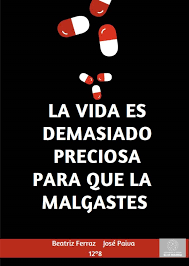
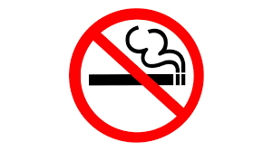
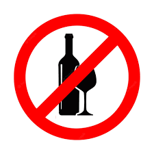
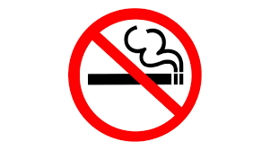
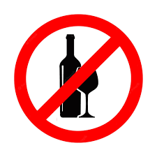

____________ADICCIONES____TIPÓS___EL TABACO__EL ALCOHOL__LAS DROGAS  
| ||||
EN ESTA PAGINA WEB LO QUE SE BUSCA ES QUE LA GENTE SEA CONSIENTE DE LOS DAÑOS QUE PUEDEN HACER LAS ADICCIONES A SUSTANCIAS |
|
Y RECUERDEN TODOS METERSE SUSTANCIAS NO ES BUENO PARA LA SALUD |
INTEGRANTES EQUIPO 1 GONZALEZ ESPINOSA RODRIGO GARCIA CASTILLO NAHUM AMADOR SANDOVAL JOSE DE JESUS SANTES PAQUI LUIS LACROA MARTINEZ ADRIAN |